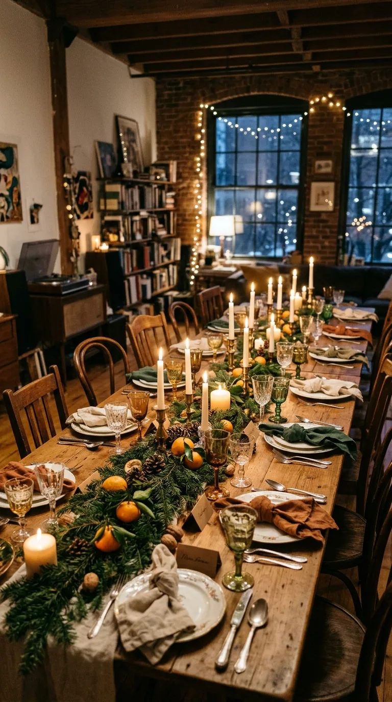
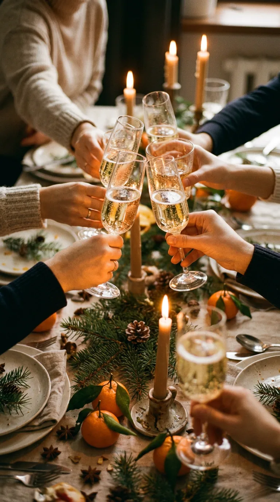
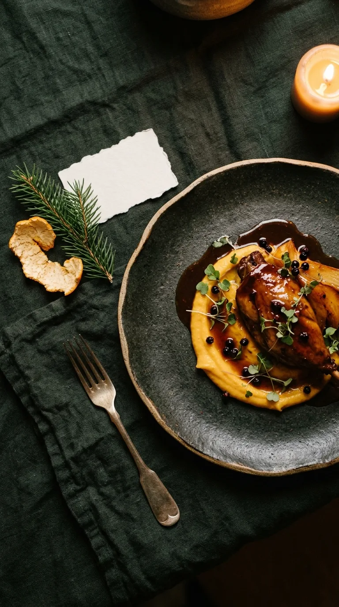

Пример под задачу · СемьСюр
10 гостей на ужин 4 декабря — за неделю
Серия сторис-приглашений на авторский ужин «В поисках новогоднего настроения» и план продвижения по дням. Фото — пример атмосферы, в работе заменю на ваши.

«В поисках новогоднего настроения»
4 декабря. Один длинный стол на 10 гостей.
Хочу место
Свободных мест всё меньше
Обновляем каждый день — пример: занято 4 из 10.
Записаться
Авторская кухня и камерная компания
Разговоры, свечи и ужин, который запомнится.
Ответьте «+» — пришлём деталиСторис 9:16. Текст на экране — заготовка: меню, цену и адрес возьму у вас.
План на неделю до ужина
Анонс
Пост + 3 сторис, опрос «С кем пойдёте?».
Свои гости
Личные приглашения тем, кто уже был у вас.
Атмосфера
Кадры и отзывы с прошлых ужинов.
Ролик
Короткое вертикальное видео из ваших съёмок с призывом.
Новая аудитория
Реклама в ВК по интересам: гастрономия, события в городе.
Последние места
Счётчик мест и срок записи.
Подтверждения
Напоминание каждому записавшемуся за сутки.
Декабрь: «Тайный совет Хогвартса»
Из ваших фото и видео с вечера — серия, которая зовёт на следующие ужины.
Демо собрано под заказ: фото атмосферы — пример, план — предложение, обсудим и поправим.